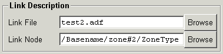

Link Description
This panel gives the file name and node location for a linked node. Editing
these will set or change the link properties for the node specified in
the Node Description panel. For a normal node,
both entries will be empty. For a linked node, the Link Node field
must be given. If the Link File entry is blank, then the link is
within the current file, else it specifies the file to which the link refers.
To apply the changes, use the Create or Modify buttons.

-
Link File
-
Shows the name of the file to which the link refers. If blank, then the
link is in the current file. The Browse button may be used to invoke
a file selection dialog with which to select a file name.
-
-
Link Node
-
Shows the node to which the link refers. This is required for a link. The
Browse
button to the right will invoke a node
tree browser panel, allowing selection of the node.
[previous] [index][next]